FDOP Example Statistical Analysis (2019)
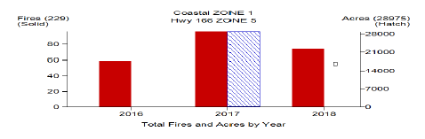Fire Occurance Summary: (Zones 1 and 5)
For the period of record in the analysis of Zones 1 and 5 (2016-2018), 19 vegetation fires per month on average either threatened or occurred in Zones 1 and 5. The most acreage burned in these two zones occurred in 2017, due to the Alamo Fire. Most fires occurred in July (16%) and January & June (11% each). (Zones 1 and 5)
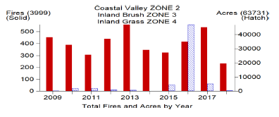Fire Occurance Summary: (Zones 2, 3 and 4)
For the period of record in the analysis of Zones 2, 3, and 4 (2009-2018), 333 vegetation fires per month on average either threatened or occurred in Zones 2, 3, and 4. The most acreage burned in these two zones occurred in 2016, due to the Chimney Fire. Most fires occurred in July (14%) and June (12%).
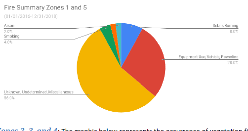Ignition Data: (Zones 1 and 5)
The graphic above represents the occurrence of vegetation fire causes in Zones 1 and 5 by percent from 2016-2018 (for all fires 1 acre or more). The most common cause of ignitions has been accounted for in ‘Unknown, Undetermined, Miscellaneous’ causes (56%) and ‘Equipment Use, Vehicle, Powerline’ (28%). ‘Debris Burning’ (8%), ‘Smoking” (4%), and ‘Campfire’ & ‘Arson’ (both 2%) are also ignition causes for vegetation fires in Zones 1 and 5.
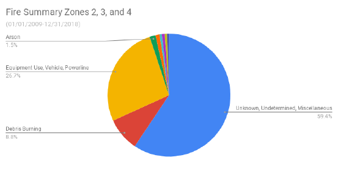Ignition Data: (Zones 2, 3 and 4)
The graphic above represents the occurrence of vegetation fire causes in Zones 2, 3, and 4 by percent from 2009-2018 (for all fires 1 acre or more). The most common cause of ignitions has been accounted for in ‘Unknown, Undetermined, Miscellaneous’ causes (59%) and ‘Equipment Use, Vehicle, Powerline’ (27%). ‘Debris Burning’ (9%), ‘Arson’ (2%) and ‘Playing with Fire’ (1%) are also ignition causes for vegetation fires in Zones 2, 3, and 4.
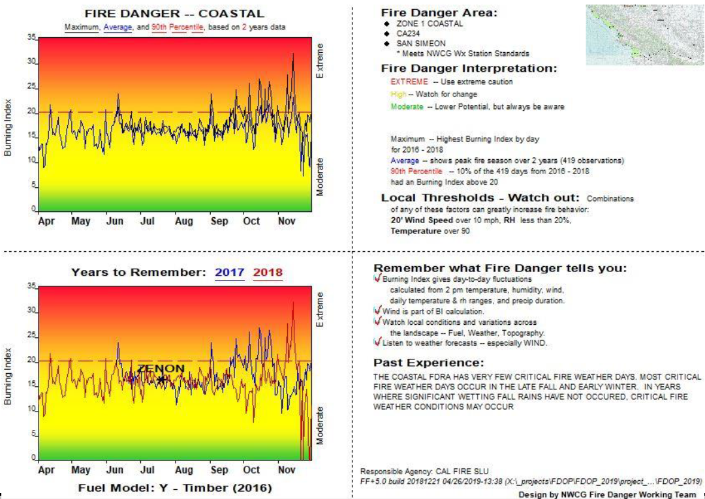 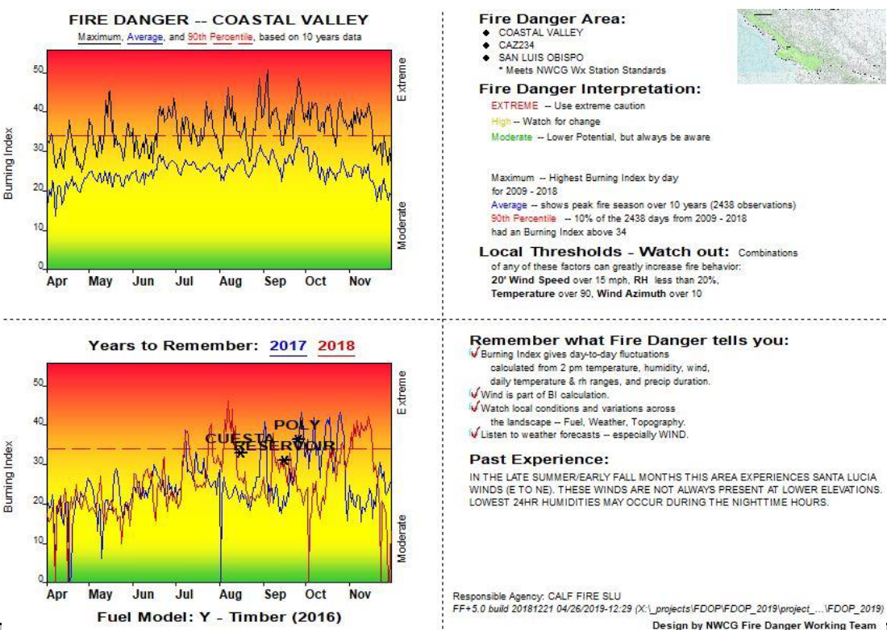 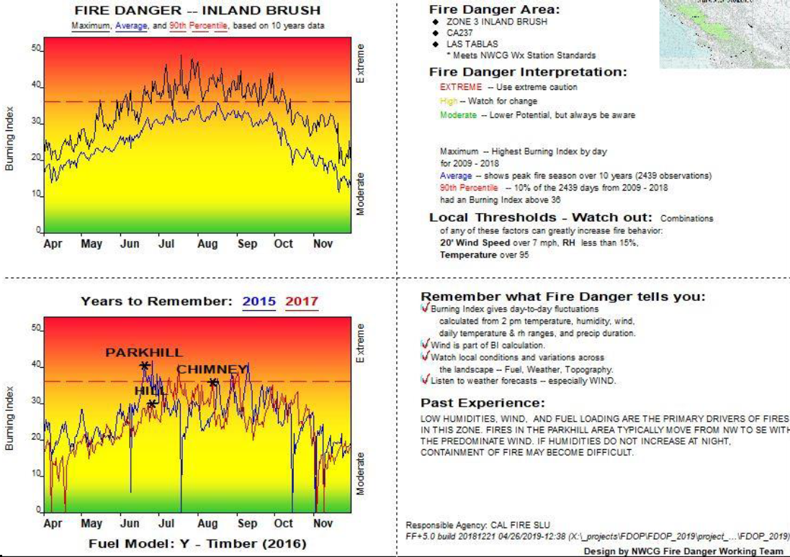 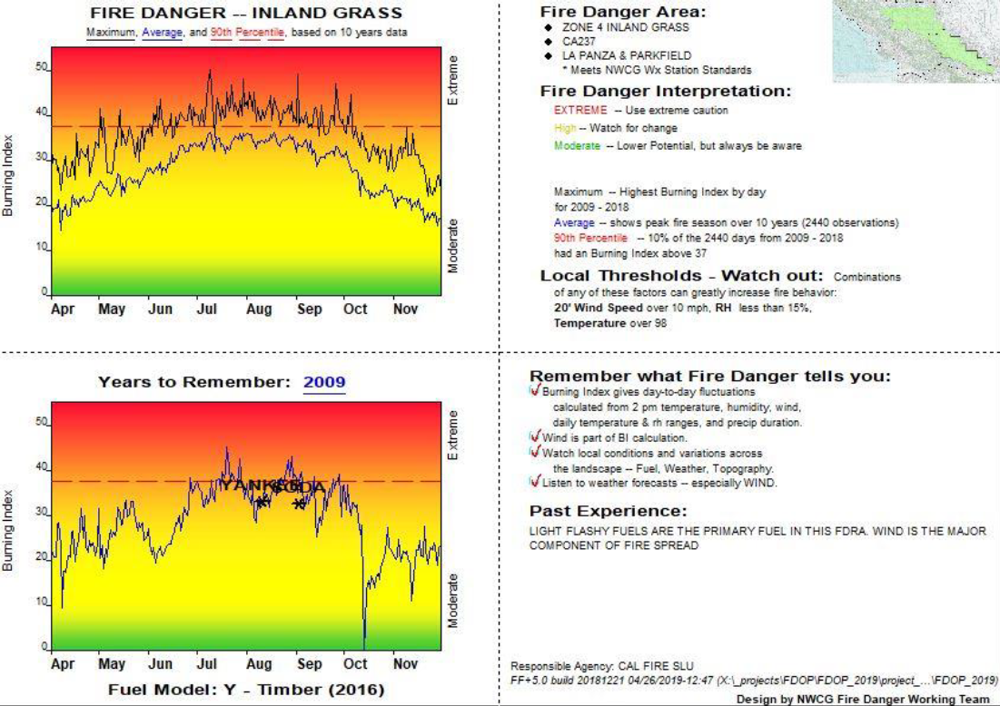 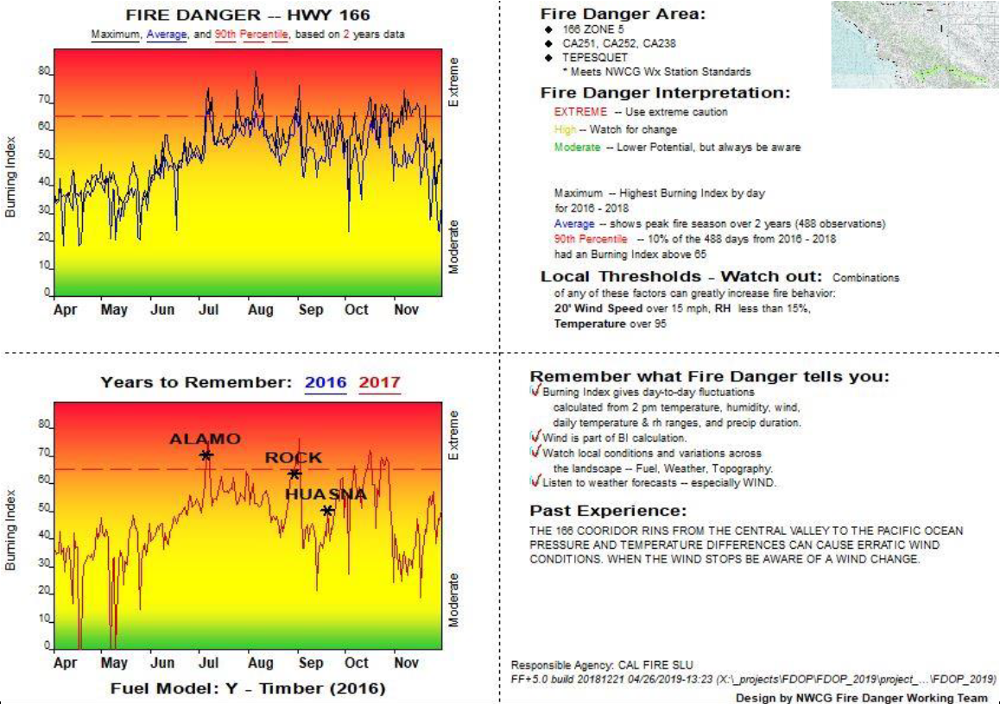 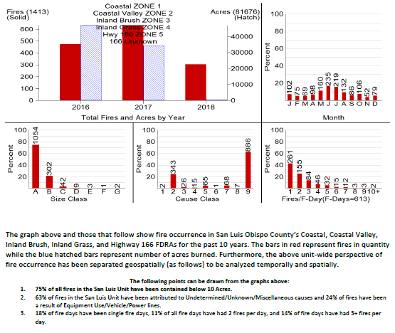Fire Occurance: (Zones 1-5)
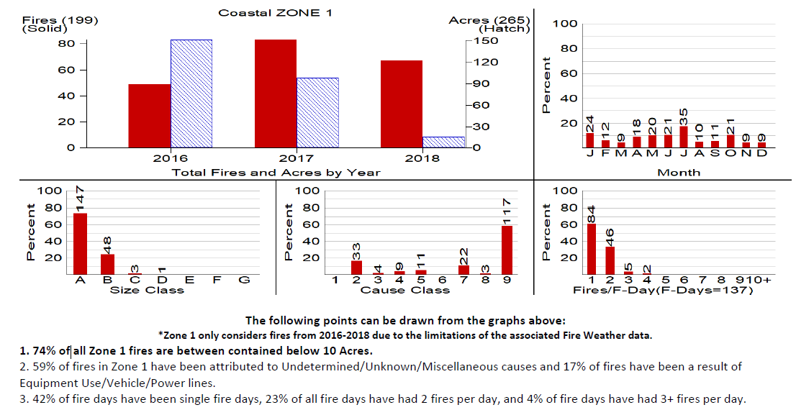Fire Occurance: (Zone 1)
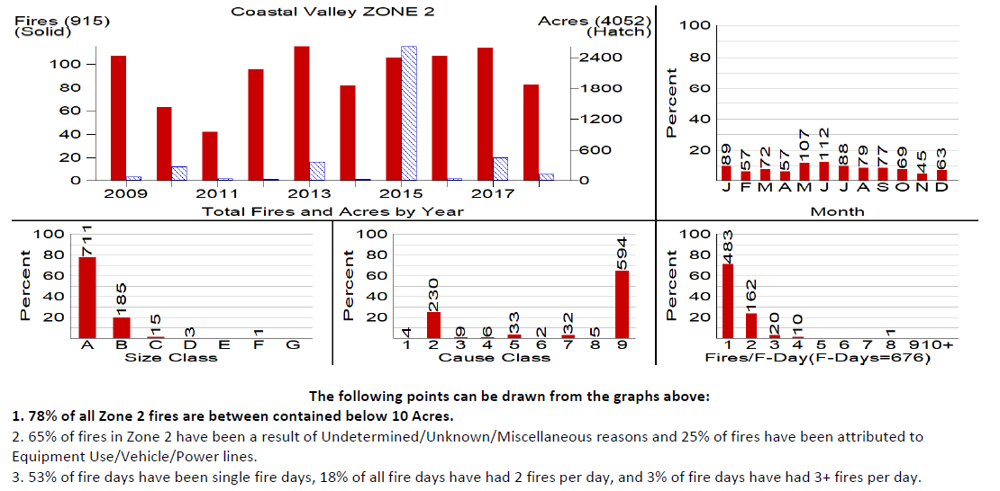Fire Occurance: (Zone 2)
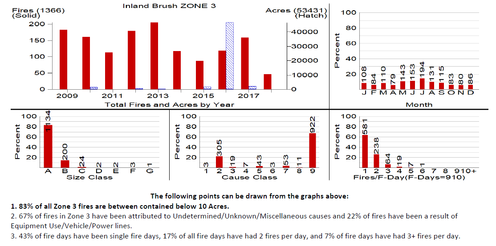Fire Occurance: (Zone 3)
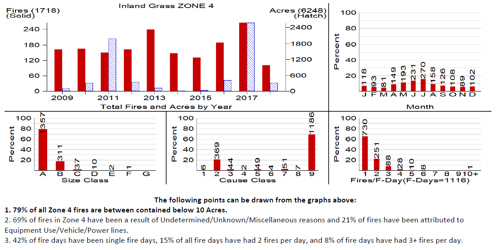Fire Occurance: (Zone 4)
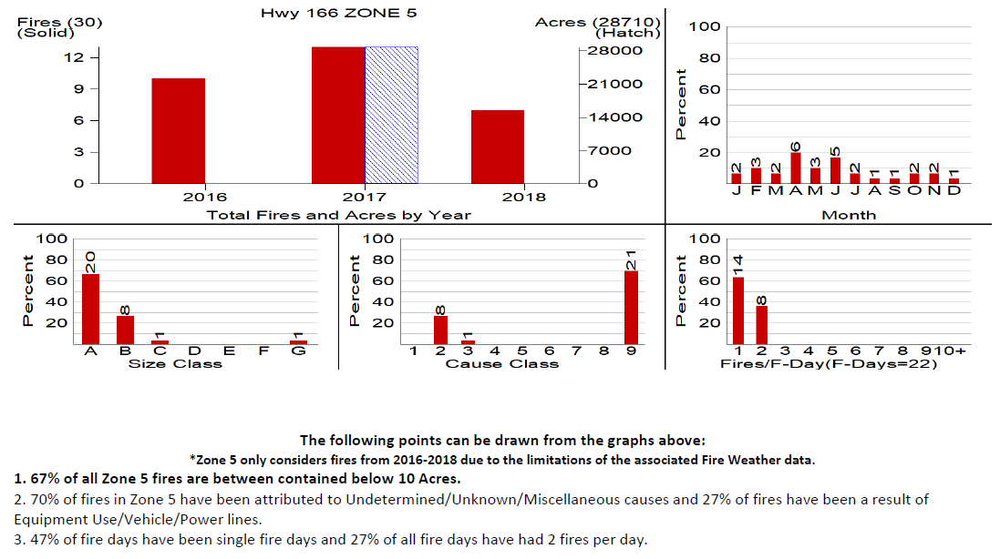Fire Occurance: (Zone 5)
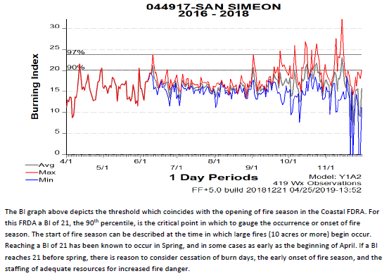Burn Index Half Year: (Zone 1)
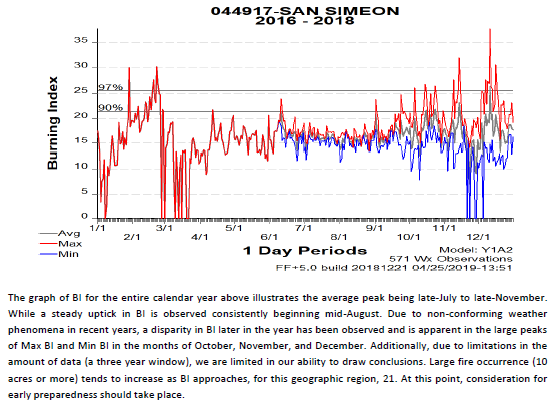Burn Index Full Year: (Zone 1)
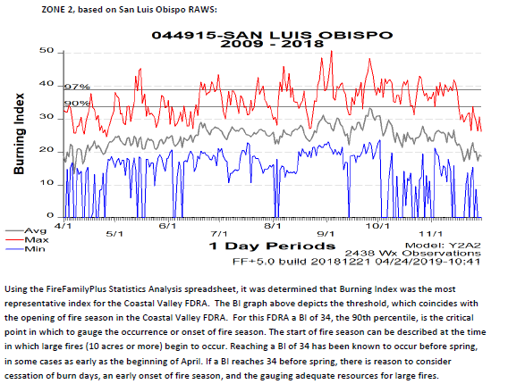Burn Index Half Year: (Zone 2)
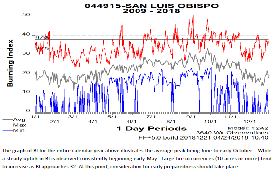Burn Index Full Year: (Zone 2)
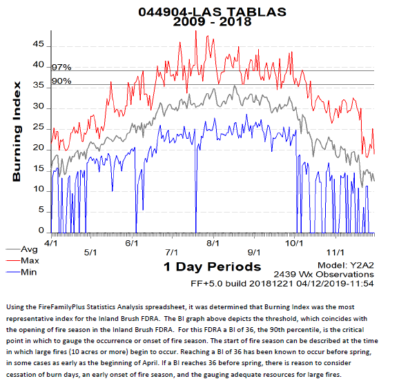Burn Index Half Year: (Zone 3)
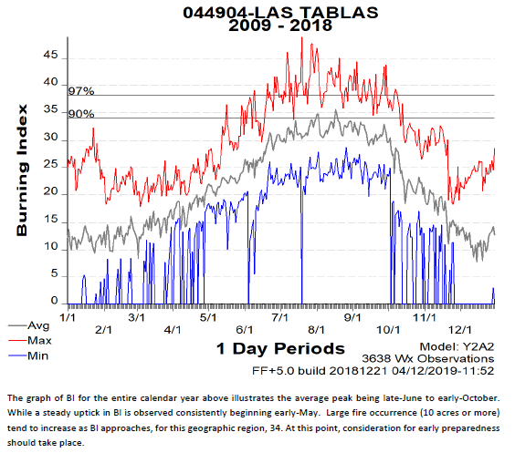Burn Index Full Year: (Zone 3)
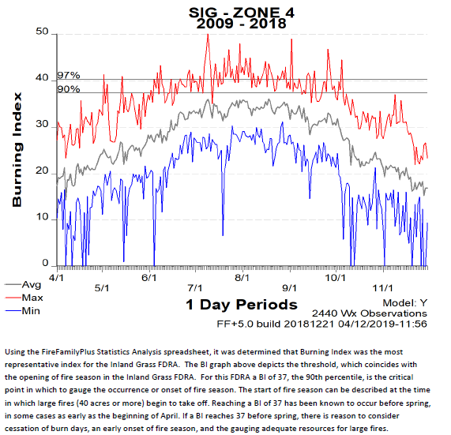Burn Index Half Year: (Zone 4)
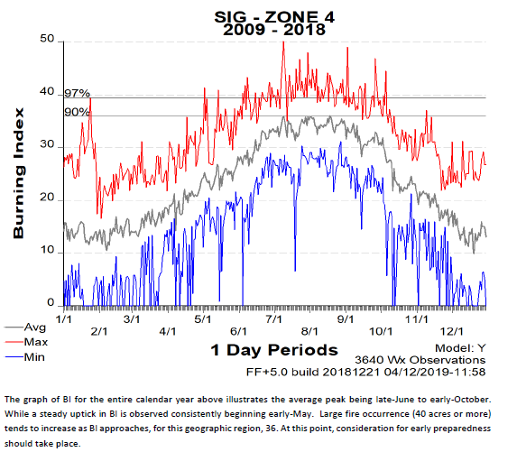Burn Index Full Year: (Zone 4)
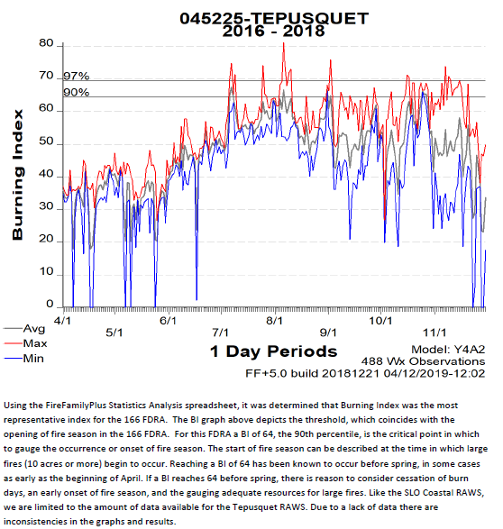Burn Index Half Year: (Tepusquet)
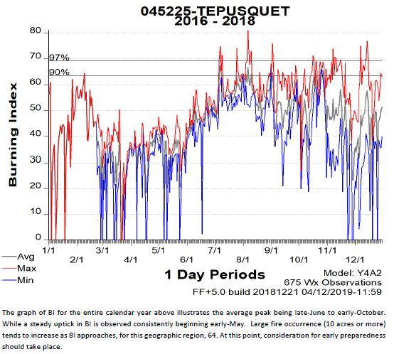Burn Index Full Year: (Tepusquet)